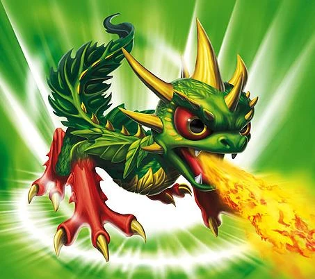
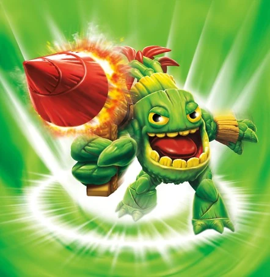
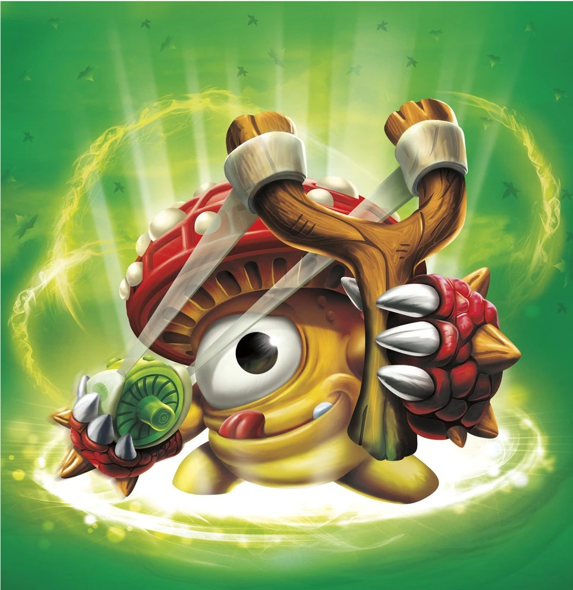
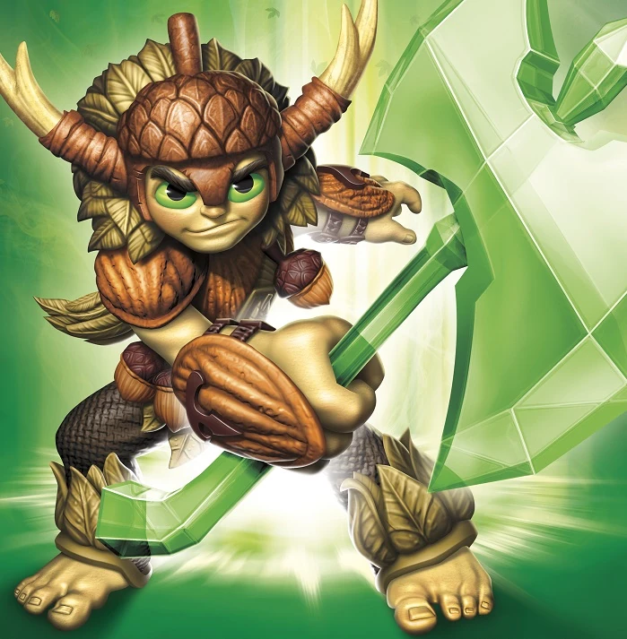
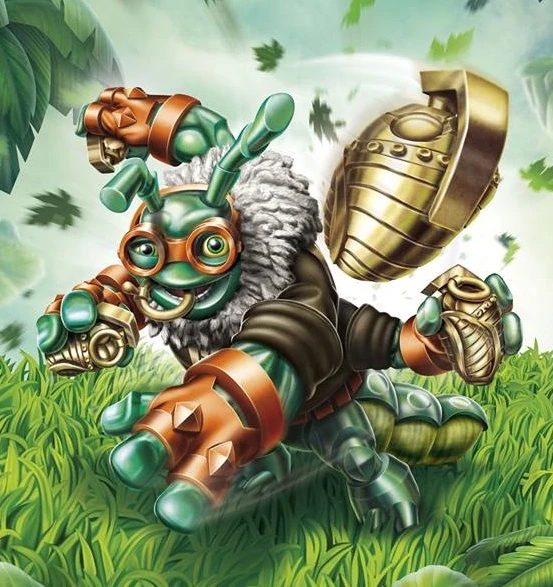
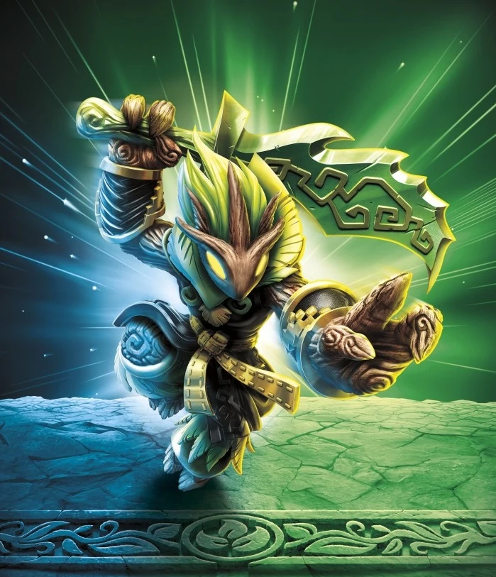

Camo
Hatched at the roots of the Tree of Life, Camo is half-dragon, half-plant – with effervescent life energy flowing through his scaly leaves. This power allows him to cultivate fruits and vegetables at a highly-accelerated rate, which causes them to explode when they ripen. Camo’s unique gift caught the eye of Master Eon, initially because he was hungry and tried to eat a melon that exploded in his face. But upon realizing his true power, Eon convinced Camo to help the Skylanders protect their world.

Zook
Zook hails from a strange and unusual species called Bambazookers, who once lived their entire lives standing in place... until Zook discovered they could walk simply by stepping out of the mud. After that, he became a wandering hero, using his hand-carved bamboo tube as a bazooka that fires special explosive thorns. Campfire songs were even written about him. Now, Zook spends his time as a Skylander, figuring he can be an even bigger hero... and have even more songs written about him.
Stealth Elf
As a small child, Stealth Elf awoke one morning inside the hollow of an old tree with no memory of how she got there. She was taken in by an unusually stealthy, ninja-like forest creature in the deep forest. Under his tutelage, she has spent the majority of her life training in the art of stealth fighting. After completing her training, she became a Skylander and set out into the world to uncover the mystery behind her origins.
Stump Smash
Stump Smash was once a magical tree that spent most of his time sleeping peacefully in the forests of Skylands. Then one day he awoke to discover his entire forest had been chopped down and logged by trolls– himself included. His long branches were gone, leaving him with only powerful mallets for hands, which he used to smash the troll tree-cutting machines. Although still grumpy about what happened to him, Stump Smash has vowed to protect Skylands against those who would do it harm… especially trolls.
Tree Rex
Long ago before the Giants protected Skylands, Tree Rex was a majestic tree living peacefully in the ancient woods. But this tranquil peace came to an end when the Arkeyans built a nearby factory to produce war machines. After years of his soil being poisoned by the magic and tech waste from the factory, he mutated into who he is now - a powerful Giant who will crush anything that threatens the natural order of things.

Shroomboom
Shroomboom was most unfortunate to have been born in a pizza topping garden belonging to Kaos. Growing up among his fellow fungi, he knew it was only a matter of time before a late night craving would bring about their demise. So Shroomboom took a twig and a strand of spider web and made a slingshot. One by one, he launched all of his friends over the garden fence before flinging himself over to join them. Then he guided them all to the edge of the island and leapt to freedom, using his mushroom cap to catch a friendly breeze. Now as a member of the Skylanders, Shroomboom continues to perform courageous deeds... but he can be hard to find on pizza night.
Stink Bomb
Stink Bomb studied martial arts under one of the greatest ninja masters in history, who believed that surprise was the key to finding your true self. Thus, his master would constantly jump out and frighten him, hoping that it would scare Stink Bomb into finding his innermost strength. On one such occasion, Stink Bomb was so surprised that he instinctively released a cloud of vapor so pungent that it caused his master to disappear and never return. With this newly discovered ability, Stink Bomb developed his own form of martial arts known as Kung Fume, and wandered the land teaching it to all those who wished to learn. It was not long before the news (and smell) of this new form reached Master Eon, who sought out the young ninja at once.
Grilla Drilla
In the distant jungles of what was once the sprawling subterranean city of the Drilla Empire, Grilla Drilla served among the guards for the Drilla King. Every seven years, the king would select the bravest and strongest guard to become their leader. It was during the last selection ceremony that a troll mining operation broke through the ground above them and quickly snatched the king, wanting to know the location of the famed Drilla Diamond. Having never ventured above ground, Grilla Drilla risked everything to defeat the trolls and rescue the Drilla King. In return for his bravery, Grilla was selected as the new leader. But he instead decided to join the Skylanders, where he could protect even more residents of Skylands.
Zoo Lou
Descended from a long line of shamans, Zoo Lou traveled far and wide to the Seven Strange Strongholds – ancient, mysterious sites of great wonder in Skylands – where he studied the wisdom and fighting styles of the Seven Strange Mages. After many years of traveling and studying, Zoo Lou returned to find an army of trolls had invaded his sacred homeland to mine its natural magic resources. Zoo Lou’s warrior heart burned with fury. And having now mastered the enchanted art of communicating with nature and summoning animals, he unleashed his great mojo – attacking the trolls and single handedly freeing his lands once again. It was this heroic feat that caught the eye of Double Trouble, who then brought Zoo Lou to Master Eon and the Skylanders.
Bumble Blast
Bumble Blast started life as a humble beehive in the Radiant Mountains, where for ages the bees made the most sweetest, most magical honey in all of Skylands. When Kaos heard about this "super honey", he wanted all of it for himself and soon launched an attack on the peaceful Bees. But when his minions arrived to plunder everything the bees had created, they were met by Bumble Blast. He alone had been home to the bees and considered himself their protector. Using the power of the magic honey, Bumble Blast valiantly battled the evil minions, who felt his powerful sting that day. Afterward, Bumble Blast roamed Skylands as a protector of nature, where he soon joined with the Skylanders.
Tuff Luck
For many years, Tuff Luck and her tribe guarded the Fortunata Springs – the source of all good luck in Skylands. Though hidden in the Random Canyons, which move without warning to cover the hidden entrance to the magical waters, minions of Kaos located the springs and flew in sponge-tankers to drain every drop of the lucky liquid. Fortunately, Tuff Luck was patrolling the area and immediately jumped into action when she saw what was happening. Between her awesome skill and unbeatable good luck, she single-handedly drove off the minions. She then drank from the magical waters, as was custom for her tribe. Sensing a greater calling, Tuff Luck decided to leave her tribe to join the Trap Team, where she could do even more to help protect Skylands. Armed with her Traptanium Warblades, she always beats the odds – and evil – at every turn!

Bushwhack
Born to a race of tree elves who were protectors of the rich Arcadian Timberland, Bushwhack was supposed to be a ranger. But being the smallest of his clan, he was sent deep into the woods by the Chieftain to study with Arbo, known for helping the Skylanders rebuild the Core of Light. The tree spirit looked beyond Bushwhack’s size, and seeing that he had the heart of a warrior, taught him many secrets. Arbo even gifted him with an enchanted axe. So when a legion of Lumberjack Trolls invaded the forest and overpowered the elves, it was Bushwhack who set out to stop them. Drawing out the trolls, he used his enchanted axe and knowledge of the forest to capture them and destroy their tree-cutting machines. Afterward, Bushwhack not only was made a ranger but a Skylander. As part of the Trap Team, he now uses his Traptanium axe to whack evil wherever it grows!
Food Fight
Food Fight does more than just play with his food, he battles with it! This tough little Veggie Warrior is the byproduct of a troll food experiment gone wrong. When the Troll Farmers Guild attempted to fertilize their soil with gunpowder, they got more than a super snack – they got an all-out Food Fight! Rising from the ground, he led the neighborhood Garden Patrol to victory. Later, he went on to defend his garden home against a rogue army of gnomes after they attempted to wrap the Asparagus people in bacon! His courage caught the eye of Master Eon, who decided that this was one veggie lover he needed on his side as a valued member of the Skylanders. When it comes to Food Fight, it’s all you can eat for evil!
High Five
High Five is one of the most skilled sky racers of all the dragonflies. But as the fifth son of the Royal High Flying Dragonflies, he was not allowed to enter any of the racing tournaments that took place each year because of his age. Instead, he was forced to watch from the sidelines as his four older brothers competed for the coveted Trophy of Sparx, which legend has said holds magical properties. One year, during the biggest racing event of the season, High Five learned that the Troll Racing Team had stolen the valuable trophy and were going to use the race to cover their escape. He quickly took action, jumping into the race and using his amazing flying skills to weave and dodge his way to the front of the pack, where he caught up to the trolls and brought them down. For his actions, High Five was given the Trophy of Sparx. Even more importantly, he was made a Skylander, where he now helps protect Skylands from any evildoers.

Thrillipede
Thrillipede served in the Millipede Military in the outer regions of Skylands. As the top pilot in his unit, Thrillipede was responsible for single-handedly blasting over 300 Greeble warships out of the sky! When the Great Greeble War came to an end, he returned to his hometown of Flutter Bay as a celebrated hero. He was the talk of the town and everyone wanted to shake the many hands of the famous young pilot. News of his heroics eventually made their way to Captain Flynn at the Skylanders Academy, who set out to determine if the stories were true. In a series of friendly challenges, the two pilots raced, soared through obstacles, and performed incredible stunts in front of a cheering Flutter Bay crowd. In each event, Thrillipede stood victorious, and was asked to join the Skylanders shortly after. Of course, Flynn later admitted that he “let him win” so that Thrillipede wouldn’t be embarrassed in front of his hometown.
Super Shot Stealth Elf
Super Shot Stealth Elf is the Superchargers counterpart of Stealth Elf in Skylanders Superchargers. Her signature vehicle is the Stealth Stinger.
Turbo Charge Donkey Kong
Donkey Kong is a fun-loving powerhouse gifted with great strength and incredible agility. His insatiable curiosity and easy-going attitude led him to explore the rift that appeared in his native jungle and brought him to exciting new adventures in this world called Skylands. Donkey Kong's fearlessness and reflexes made him a welcome addition to the SuperChargers and also the perfect driver for the stunt-tacular Barrel Blaster vehicle.
Boom Bloom
Boom Bloom was created in the laboratory of a mad scientist! After using his mutation goo to change deadwood into evil creatures, Dr. Krankcase began experimenting with live plants! But it had a much different effect. Instead of becoming subservient villains, the mutated plants instantly rebelled against their creator and tried to destroy his goo factory. Dr. Krankcase and his henchmen were able to thwart all of these insurgent plants, except for one - Boom Bloom! Her mutation gave her extraordinary Ninja skills and a thorny whip, which she used to unleash a flurry of martial arts moves that forced Dr. Krankcase to flee his own factory and vow never to experiment on plants again. Now as a Sensei of the Ninja class, she uses her incredible abilities to teach new Skylanders how to protect nature... and unleash its fury!

Ambush
There were many mysterious things in the Mystical Bamboo Forest, but none more so than Ambush. The forest was considered to be one of Skylands’ greatest natural wonders, and no outsider, good or bad, was ever permitted to trespass. But that didn’t stop Kaos’ mother! After deciding that the ancient trees would make an exquisite display in her Royal Courtyard, she commanded her army of chainsaw-wielding trolls to chop down the entire forest. This angered Ambush, the mystical tree-knight, who saw the atrocity and swore revenge! Wielding his mythic sword, he fought off the trolls and forced Kaos’ mother into hiding. When Master Eon heard the story, he knew that the mysterious sword master would make the ideal Sensei, and promised to “go green” himself if Ambush would join the Skylander team. Ambush now trains other Knights - and those who are not environmentally conscious cower in fear!
Chompy Mage
History
Believe it or not, the Chompy Mage actually hatched from inside a Chompy Pod. At least that is how his Chompy hand puppet tells the story. Having been raised by Chompies, it is no surprise that the old magician is a little strange. He simply grew up embracing the Chompy way – believing that Skylands would be a better place if everyone was a Chompy – an illegal enchantment which he has actually tried to perform on several occasions.
Skylanders Giants
The Chompy Mage was on his way to the annual Chompy Convention (ChompyCon), but got lost. He didn't want to ask for directions, so he pretended like he moved to Wilikin Village on purpose. The Chompy Mage then figured he would stay there for a while, practicing his magic, and then set out for the ChompyCon next year. However, his antics proved to be a nuisance to the Wilikins, eluding the residents by switching between the real world and the Wilikin world. Eventually, the Skylander confronted the Chompy Mage and defeated him at the edge of Wilikin Village. He later appeared in the credits, conversing with Flynn.
Skylanders Trap Team
Eventually, the Chompy Mage's forbidden magic to turn others into Chompies led him to be locked up inside Cloudcracker Prison, where he met the other Doom Raiders. Of course, they all thought he was completely crazy, but the Chompy Mage can see through the eyes of any Chompy in Skylands — and having a few billion little spies can come in handy when trying to enact revenge on the Skylanders. Plus, he could secure the Chompy vote for any sort of political elections that followed.
The Chompy Mage, along with the other remaining members of the Doom Raiders, were freed from Cloudcracker Prison by Kaos who attempted to assume leadership over the villainous group. However, the Doom Raiders were more willing to follow orders of their original leader, the Golden Queen. The Chompy Mage was sent by the Golden Queen to locate all the Traptanium needed to create their Ultimate Weapon. He confronted the Skylanders in his hot air balloon in an effort to stop them from reaching the Chompy Mountain entrance. Fortunately for them, there was a cannon nearby, so the Skylanders could make comeback shots from the Chompy Mage's own cannons.
After freeing Mabu Defense Force member Snuckles, the Skylanders faced the Chompy Mage atop the Chompy Head Spire, and, despite his many Chompies and his imposing Chompy forms, he was defeated once again. However, he manged to inform the Doom Raiders of the location of all the Traptanium in Skylands before his capture.
After the Skylanders saved the Phoenix Chicken from Chef Pepper Jack, they took him and Broccoli Guy on board the Chef Zeppelin for their Villain Quests. Chompy Mage's quest was called "Free the Chompies!", provided by a Mabu chef named Cookie. He explained to the heroes that he was responsible for wrangling all the ship's Chompies, and that he didn't attend the Royal Cooking Academy to get bit ever so often, and pleaded the mage's assistance so he could finally work in the kitchen. After freeing the critters, Chompy Mage was awarded with Cookie's thanks and a new outfit.
Skylanders Superchargers
The Chompy Mage reappeared as a raceable villain riding his signature vehicle, the Chompy Buster. After defeating him in Boss Pursuit, the player will be able to race as the Chompy Mage in Race Mode.
Skylanders Imaginators
After breaking out and joining the other Doom Raiders, Chompy Mage was once again captured by the Skylanders. Eon gave him and other villains a choice - either go back to jail or become Skylander Senseis, teaching a new generation of Imaginators their formidable battle skills as well as how to stay clear of a life of crime. They accepted the deal, but first had to prove themselves by re-arranging all the books in the Academy's library, a task which took almost two years, testing every ounce of will they had. This also gave Chompy Mage time to take up the bazooka, which he was naturally so good at that he now trains Imaginators of the Bazooker Class as a Sensei master.
Crash Bandicoot
A wormhole has opened in Skylands and the great Aku Aku appears! He has come to announce the once-in-two-decades Synchronization Celebration--a time when all of the worlds align perfectly. All the inhabitants of Wumpa Island are having a party and they want to invite the Skylanders. But with Kaos on a quest to take over Skylands using his army of Doomlanders, the Skylanders must focus on stopping his evil plans. Never one to shy away from danger, the legendary marsupial Crash Bandicoot leaps through the wormhole to join the Skylanders in the ultimate battle against Kaos!